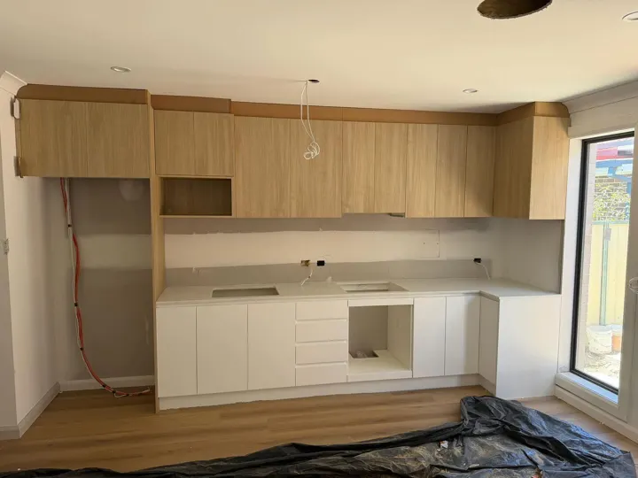

Kitchen and wardrobes for a granny flat in Punchbowl
Kitchen and wardrobes designed, built and installed for a new granny flat. Warm timber-look overheads sit over crisp white base cabinets, with a long stone benchtop and a tall fridge and pantry run.
- Timber-look and white two-tone kitchen
- Built-in wardrobes
- Long stone benchtop